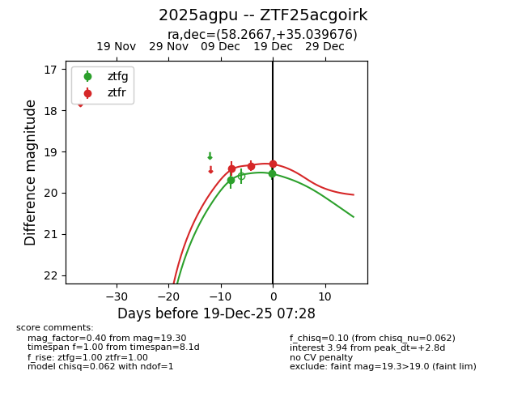
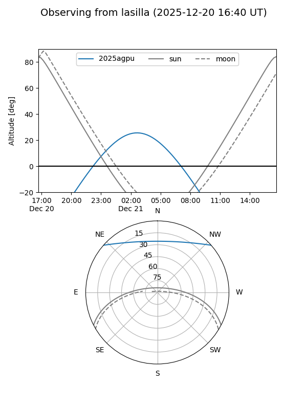
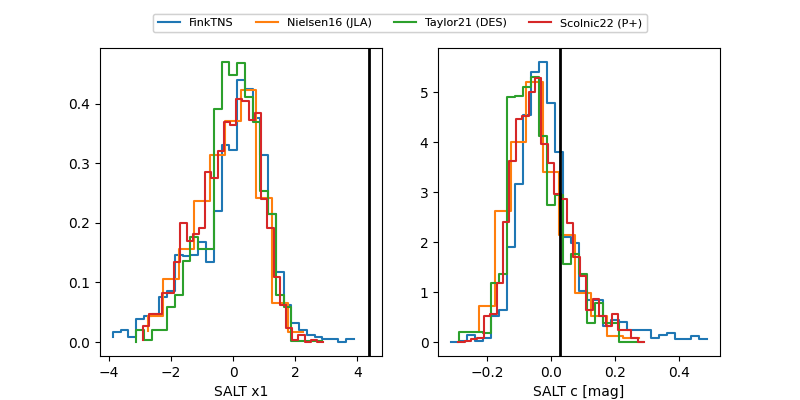

2025agpu
Target 2025agpu at 2025-12-21 06:23
Aliases and brokers:
FINK: fink-portal.org/ZTF25acgoirk
Lasair: lasair-ztf.lsst.ac.uk/objects/ZTF25acgoirk
ALeRCE: alerce.online/object/ZTF25acgoirk
TNS: wis-tns.org/object/2025agpu
YSE: ziggy.ucolick.org/yse/transient_detail/2025agpu
alt names
ZTF25acgoirk (ztf,fink_ztf)
2025agpu (tns,yse)
Coordinates:
equatorial (ra, dec) = 58.2667,+35.03968
equatorial (HMS+DMS) = 03:53:04.02,+35:02:22.83
galactic (l, b) = (159.9548,-14.46451)
Flags:
Photometry:
last ztfg=19.69, ztfr=19.50
3 ztfg, 4 ztfr detections
Lightcurve

Visibility


Additional plots
